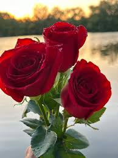
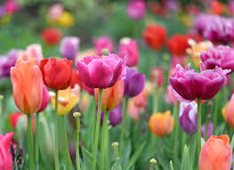
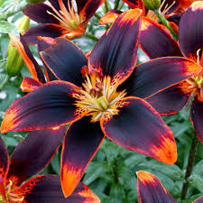
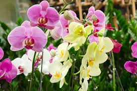

Explore the beauty and history of the five most beloved flowers across the globe.
Roses
Roses are among the most recognizable and cherished flowers in the world. Known for their layered petals and enchanting fragrance, roses come in a wide range of colors, each symbolizing a different sentiment. Red roses are synonymous with love, while yellow roses represent friendship and joy.
Historically, roses have been cultivated for over 5,000 years, with origins tracing back to ancient civilizations such as those in Persia and China. They have been used in everything from medicinal applications to royal emblems, making them a symbol of power, love, and beauty through the ages.

Tulips
Tulips are known for their simple, elegant shape and vibrant colors. They bloom in spring and are often associated with renewal and the beginning of a new season. Their smooth petals and bright hues make them a popular choice for gardens and floral arrangements worldwide.
Tulips originated in Central Asia and were later cultivated extensively in the Ottoman Empire. In the 17th century, they became the center of "Tulip Mania" in the Netherlands, a period of intense economic speculation. This history makes tulips not only beautiful but also culturally significant.

Lilies
Lilies are elegant and fragrant flowers that symbolize purity and refined beauty. They are commonly used in weddings and religious ceremonies due to their classic white petals, though they also come in pink, orange, and yellow varieties. Their trumpet-shaped blooms make them stand out in any bouquet.
Historically, lilies have held symbolic meanings in ancient Greek and Roman cultures, often associated with goddesses and the divine. Their image has been found in ancient art and mythology, solidifying their status as timeless symbols of purity and grace.

Sunflowers
Sunflowers are cheerful and bright flowers known for their large heads and yellow petals. They follow the sun’s movement throughout the day, a behavior known as heliotropism. Their seeds are not only edible but also used to produce sunflower oil.
Native to the Americas, sunflowers were cultivated by Indigenous peoples long before European contact. They became a symbol of the sun and harvest and have been widely grown around the world for their beauty and utility.
Orchids
Orchids are exotic flowers that come in a variety of shapes and colors, prized for their symmetry and intricate beauty. They are popular in both home gardening and high-end floral arrangements, symbolizing luxury and elegance.
Orchids have a long history of cultivation, particularly in Asia where they were used in traditional medicine and symbolism. With over 25,000 species, orchids are one of the largest families of flowering plants, representing adaptability and beauty.

About Us
We are PetalPulse, a passionate team of flower enthusiasts dedicated to exploring and sharing the beauty of the world’s most beloved blooms. Our mission is to connect people to the rich history and diverse expressions of flowers, from romantic roses to the cheerful sunflower.
Founded in 2022, PetalPulse curates content and experiences that celebrate flowers’ cultural significance and timeless charm. Whether you’re a budding gardener or a floral history buff, we provide insights and resources to deepen your love for nature’s most vibrant creations.